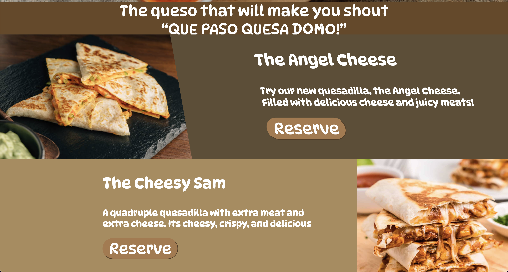
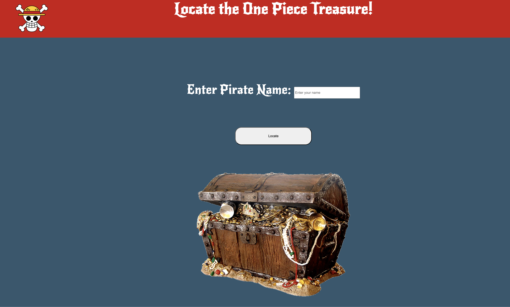
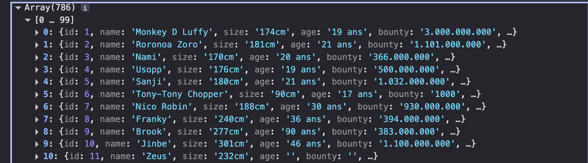
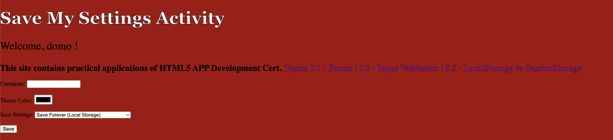
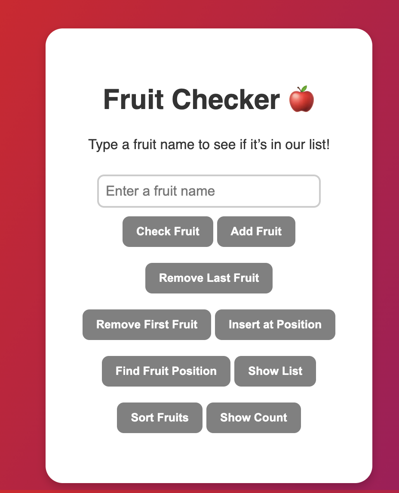

These are my previous projects developed during class. Each project represents a unique challenge and solution I've encountered. In addition, each project uilitizes a new skill we learned.


This project is a restaurant website that I developed using HTML, CSS, and JavaScript.This website
purpose is to demonstrate creativity by designing and creating a restaurant that we created. The restaurant I created is called Queso Domo, which is a Mexican restaurant that serves many different types of quesadillas. This project was a fun experience because I got to be creative and design a website that represents my restaurant. I also learned how to use JavaScript to make the website interactive and engaging for users. Overall, this project was a great opportunity for me to showcase my skills and creativity in web development.


This project is an API integration project that I developed using HTML, CSS, and JavaScript. The purpose of this project is to demonstrate my ability to integrate with external APIs and display the data in a user-friendly manner. I learned how to make HTTP requests, handle responses, and update the DOM dynamically based on the API data. This project was a great opportunity for me to showcase my skills in API integration and web development. Overall, I am proud of the work I did on this project and I believe it demonstrates my ability to create functional and interactive web applications using APIs.

This project uses local storage and session storage. This project acts as a settings saver that will save depending on which session the user picks. The inputs will save and load when the user reloads the website. This website helped me understand the difference between local storage and session storage.

This project uiltizes arrays and lists. It allows users to add their own fruits to a list and allows them to manipulate the list. Users have the options to remove, add, and check fruits inside the list. This project helped me understand how to manipulate lists and arrays.